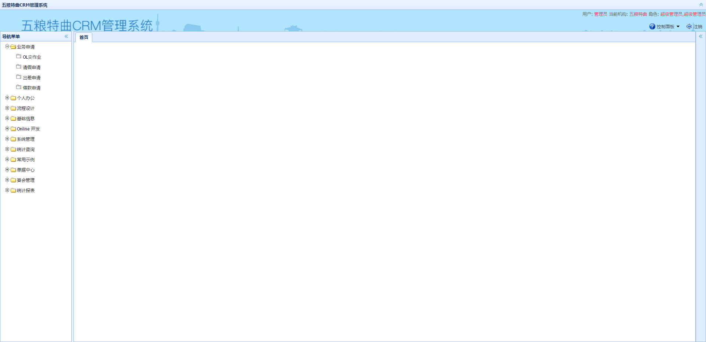

| RunCount=2 |
| result/screenshot/chrome/2016_04_12_16_52_19_loginSuccessTest.jpg |
|  |
| result/screenshot/chrome/2016_04_12_16_52_29_loginSuccessTest.jpg |
|
| RunCount=2 |
| result/screenshot/chrome/2016_04_12_16_52_38_loginFailTest_AllEmpty.jpg |
| result/screenshot/chrome/2016_04_12_16_52_40_loginFailTest_AllEmpty.jpg |
| [2016_04_12_16_52_42_login] ,screenshot failed，the reason:Session ID is null. Using WebDriver after calling quit()? Build info: version: '2.48.2', revision: '41bccdd10cf2c0560f637404c2d96164b67d9d67', time: '2015-10-09 13:08:06' System info: host: 'Lance', ip: '192.168.191.5', os.name: 'Windows 10', os.arch: 'amd64', os.version: '10.0', java.version: '1.8.0_74' Driver info: driver.version: RemoteWebDriver |